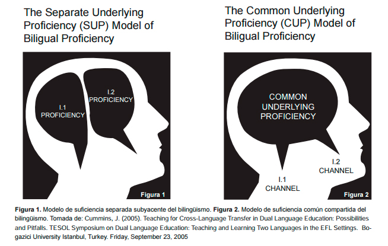

Eskuratze eleaniztunaren hipotesia
3 Euskal Hezkuntza Sistemako Eleaniztasuna: Diglosiatik Elebitasunera; eta handik Eleaniztasunera
Baliabideak: (Cummins, 2000, 2005; De Bot, 1992; Diaz de Gereñu Lasaga et al., 2021; Larrañaga et al., 2005; Maia, 2014) *
Euskal hezkuntza sistemaren eleaniztasunaren historia eta oinarri teorikoak aztertzen dira. Ikasleek euskal hezkuntza sistemaren errealitatean hizkuntza erabilpenaren eta gizartearen eraginaren analisia egiten dute.
Diglosia eta eleaniztasunaren azterketa: Ikasleek, talde txikietan, euskal hezkuntza sistemaren errealitatean diglosia eta eleaniztasunaren arteko aldeak aztertuko dituzte. Euskal hezkuntza sistemako hizkuntza ereduak: Ikasleek, talde txikietan, euskal hezkuntza sistemako hizkuntza eredu bat aukeratu eta horri buruzko azterketa txostena idatziko dute.
3.1 Sarrera
Euskal Herriak hezkuntza sistemaren garapenean izan duen ibilbidea ez da lausoa izan, ezta laua ere. Historikoki, euskal hezkuntza sistema hainbat aldaketatan eta erronka handitan murgilduta egon da, batez ere hizkuntza politikaren eraginagatik. Euskal hezkuntza sistemaren eleaniztasuna, hau da, hainbat hizkuntza erabiltzea hezkuntza prozesuan, bereziki euskara eta gaztelania, sistemaren garapen historikoan eragina izan duen faktore garrantzitsua da.
Euskal hezkuntza sistemaren garapen historikoak erakutsi digu nola euskara, gure hizkuntza jatorrizkoa, hezkuntza prozesuan sartu den, eta nola hizkuntza politikak, bai estatukoak bai autonomikoak, eragina izan duten hizkuntza erabilpenaren eta hezkuntza ereduaren definizioan. Gaur egun, euskal hezkuntza sistema eleaniztasunaren erronkaren aurrean dago, hau da, nola integra daitezkeen hainbat hizkuntza hezkuntza prozesuan modu eraginkorrean.
Beti ere badugu beste zalantza nagusi bat. Hitz egin ote dezakegun “Euskal Hizkuntza Sistema” batez, ala askoz egokiagoa ez ote litzatekeen Euskal Herrian elkarrekin eta elkarren ondoan garatzen diren hezkuntza sistemez aritzea.
3.1.1 Landuko diren zenbait puntu
Euskal Hezkuntza Sistemaren Historiaz
Diglosia, Elebitasuna eta Eleaniztasuna
Oinarri Teorikoak
Hizkuntzalaritza
Psikolinguistika
Soziolinguistika
Hizkuntzaren Didaktika
Hizkuntzaren Erabilpena eta Gizartearen Eragina
- Euskal Herriko Hezkuntza sisteman, elebitasunetik eleaniztasunera: gaur egungo egoera berriaren ezaugarriak eta norabideak.
- Eleaniztasuna eskolan: hiru/lau hizkuntza helburu (hezkuntza marko hirueleduna/ikastolen proiektua)
- Geletan hainbat hizkuntza (hizkuntza gehiago jendartean)
- Eskolan zer egin eta zergatik, hizkuntzak kudeatzeko: ikastetxearen hizkuntza proiektua.
Gaiari kolpetzeko, zalantza batzuri argitzeko bidea estauko diegu:
- Elebakartasunetik eleaniztasunera: zer iradokitzen dizu horrek EHn gaur egun?
- Jendartea aldatzen ari bide da hizkuntza-kontuetan. Zertan nabaritzen da hori eskoletan? (konparatu beste belaunaldi batzuetako eskolarekin)
- Hizkuntzei dagokienez, zer alde dago oraingo eskolen eta lehenagokoen artean? Irakasle batek zer aurkitzen du hizkuntzen kontuan ikasgela “estandar” batean?
- Gogoeta-gai honetan sakontzeko, pentsatu zeuen (hurbileko) esperientzian:
- ikasle bezala txikitan nolako “panorama” zenuten gelan edo/eta ikastetxean?
- orain irakasle-gai gisa praktiketan egon zaretenean, zer “panorama” ikusi dugu?
- Gainera, bildu informazioa taldean, zeuen gurasoei eta aitita-amamen denboraz.
- Zer ondorio ateratzen dugu konparazioa eginez?
- Zer eskatzen zaio EHko eskola-instituzioari gaur egun hizkuntza kontuetan? Zer helburu ezartzen zaizkio? Zeri jarri behar dio arreta, orain dela 20 urte jartzen ez ziona?
- Eskatzen zaiona, zer arrazoiri erantzuteko eskatzen zaio eskolari?
- Zer norabidetan abiatuko gara gaurko egoerari erantzuteko? Norantz joanen gara?
- Zer orientabide ditugu norabide berriak lantzeko?
- linguistikoak
- soziolinguistikoak
- psikolinguistikoak
- hizkuntzaren didaktikaz
Zalantzon argigarri, gai honetan honako bidea proposatzen da:
- Azken 50 urte honetako norabidea
- Gaur egungo egoera
- Zertan aldatu da gaurko egoera?
- Zer eskatzen zaio eskolari hizkuntza-kontuetan?
- Egoerari erantzuteko, alor desberdinetatik ekarpenak
- Hizkuntzalaritza
- Soziolinguistika
- Psikolinguistika
- Hizkuntzaren didaktika
- Zer ekimen ageri dira Euskal Herrian egoerari erantzuteko?
3.2 Azken 50 urtean
Elebakartasunetik elebitasunerako bidea.
- 1965\
- Hego Euskal Herrian: eskolan gaztelania (ikastolak orduantxe hasten). Telebista hasita 10 bat urte. : Hezkuntza sistemaren helburua, gaztelania ikas-irakastea (atzerriko hizkuntzari arreta handirik ez)
Irakasle euskaldunak sisteman:
- 1976
-
Baskongadetan, %5 baino gutxiago (Siadeco-Euskaltzaindia 1979: 171; Zalbide 2010: 115)
- 1993
-
Internet Euskal Herrian hasi, gutxi gora beherakoa (Urberuaga 2001)
- 1995:
-
EAEn aukera eskolan gaztelania eta euskara parean izateko (+ kontaktu gutxi atzerriko hizkuntzarekin)
-
NFKn: aukera mugatua gaztelania eta euskara maila berean ikasteko (+ kontaktu gutxi atzerriko hizkuntzarekin)
-
Iparraldean: eskolan gehiena frantsesa, euskara poliki sartzen
Sistemaren helburua
Hegoaldean: euskara eta gaztelania ikas-irakastea (Nafarroan mugatua) (eta atzerriko hizkuntzarekiko arreta handitzen)
Iparraldean: aukera mugatua euskaraz ere ikas-irakasteko (atzerriko hizkuntzarekiko arreta handitzen)
Irakasle euskaldunak sisteman, EAEn:
2006-2007: EAEn “irakasleen ia hiru laurdenak” EGA edo HE2dunak dira (publikoa eta pribatua)
EAEn beste %6k badu HE1 (publikoa eta pribatua) (Zalbide 2010:113) Publikoan: “ehuneko laurogei baino gehiago” (Zalbide 2010: 115)
Zalbide (2010): Euskararen legeak hogeita bost urte. Eskola alorreko bilakaera: balioespen-saioa. Bilbo: Euskaltzaindia
- 2014
-
Internet Euskal Herrian hainbat etxetan (ikus datu batzuk Eurostat-en)
-
EAEn, eskolan gaztelania eta euskara aukeran, parean (helburu gisa) eta ingelesa gero eta gehiago (askoz ere kontaktu gehiago hizkuntza horrekin, interneten bidez batez ere)
-
NFKn, eskolan gaztelania eta euskara aukeran, parean (helburu gisa) lurraldearen zati batean, eta ingelesa gero eta gehiago (askoz ere kontaktu gehiago hizkuntza horrekin, interneten bidez batez ere)
-
Iparraldean, eskolan frantsesa eta euskara ikas-irakasteko aukera handitzen ari da (datuak non? “Euskararen Erakunde Publikoa” delakoan begiratu).
Sistemaren helburua
Hegoaldean: euskara eta gaztelania ikas-irakastea komunikazio maila onean, eta atzerriko hizkuntza modu “funtzionalean” (ikus curriculum dekretua)
Iparraldean: frantsesa eta euskara irakastea (eta atzerriko hizkuntza ere bai)
3.2.1 Zenbakietatik beha
Ikasleak: EAEko matrikula datuak 1982-1983ko datuak gutxi gorabeherakoak dira (iturria: Zalbide 2010)
| 1982-1983 | 2000–2001 | 2001–2002 | 2002–2003 | 2003–2004 | 2004–2005 | 2005–2006 | 2006–2007 | 2007–2008 | 2008–2009 | 2009–2010 | 2010–2011 | |
|---|---|---|---|---|---|---|---|---|---|---|---|---|
| A eredua | A+X= %80 | 119.954 (%37) | 114.219 (%36) | 109.945 (%34) | 107.698 (%33) | 103.979 (%32) | 99.862 (%30) | 95.902 (%28) | 93.426 (%27) | 92.569 (%26) | 93.591 (%25) | 92.332 (%24.5) |
| B eredua | %8 | 67.838 (%21) | 66.932 (%21) | 67.205 (%21) | 67.967 (%21) | 69.941 (%21) | 71.284 (%21) | 72.479 (%21) | 74.077 (%21) | 75.274 (%21) | 75.813 (%21) | 75.301 (%20) |
| D eredua | %12 | 132.735 (%41) | 136.092 (%43) | 139.849 (%44) | 145.783 (%45) | 154.164 (%47) | 163.054 (%49) | 171.154 (%50) | 179.076 (%51) | 187.543 (%52) | 196.140 (%53) | 205.774 (%55) |
| X eredua | 1.950 (%1) | 1.963 (%1) | 1.898 (%1) | 1.882 (%1) | 1.863 (%1) | 1.846 (%1) | 1.900 (%1) | 1.947 (%1) | 1.993 (%1) | 2.013 (%1) | 2.006 (%0.5) |
Iturria: EUSTAT; Zalbide 2010
3.2.1.1 Datuak eta ariketak
Gaur eguneraino zuon eskutik iritsiko gara, horretarako segidan ematen diren datuok hiru ariketeren bitartez osatu behar dituzue:
Hezkuntza elebiduna Euskadiko Autonomia Erkidegoan (EAEn).
Ereduen onarpena jendartean: matrikulazioaren bilakaera
| 2000/2001 | 2002/2003 | 2004/2005 | 2006/2007 | 2008/2009 | 2010/2011 | 2013/2014 | 2019/2020 | |
|---|---|---|---|---|---|---|---|---|
| A eredua | 119.954 (%37) | 109.945 (%34) | 103.979 (%32) | 95.902 (%28) | 92.569(%26) | 92.332 (% 25) | ??? | |
| B eredua | 67.838 (%21) | 67.205 (%21) | 69.941 (%21) | 72.479 (%21) | 75.274 (%21) | 75.301 (20%) | ??? | |
| D eredua | 132.735 (%41) | 139.849 (%44) | 154.164 (%47) | 171.154 (%50) | 187.543 (%52) | 205.774 (%55) | ??? | |
| X eredua | 1.950 (%1) | 1.898 (%1) | 1.863 (%1) | 1.900 (%1) | 1.993 (%1) | 2.006 (0,5%) | ??? |
Ikasleen matrikulazioaren bilakaera unibertsitatez besteko irakasmailetan, hezkuntza ereduen arabera (2000-2010-…). Iturria: EUSTAT
Ariketa: aurkitu azken hamar urteetako datuak (2013-2014, 2015-2016, 2017-2018, 2018-2019, 2019-2020, ikasturtekoak, adibidez)Ariketa (1) egiteko tokia hau da
Hezkuntza elebiduna Euskadiko Autonomia Erkidegoan (EAEn).
Joera norantz doan ikusteko, bilatu datuak beheko koadroa osatzeko:
| 2014-2015 ikasturtea. | Ikasleak guztira | A eredua | B eredua | D eredua | X eredua |
|---|---|---|---|---|---|
| Haur Hezkuntza (2-6 urte) | |||||
| Lehen Hezkuntza (6-12 urte) | |||||
| Nahitaezko Bigarren Hezkuntza (12-16 urte) |
Nahitaezko hezkuntza mailetako matrikula guztiak, EAEn (2019-2020 ikasturtea)
EAEko eskolen hizkuntz ereduen gainetiko azterketa
Zuon taldeko gehienak nongoak diren, inguru horretako lan eskaintzaren azterketa egingo dugu. Horretarako, baskongadetakoak zaretela pentsaturik, hurrengo web orrian aurkitu behar duzu “dagokizuen” herrialdeko eskolen sailkapena eta horren azterketa egin behar duzue (joerari erreparatuta, lana ardaztuko dugu zuen titulazioak bideratzen zaituzten etapara begira).
Azterketa labur hori egiteko dokumentua irakasleari eskatu.
3.3 Aldaketa
2.1. Faktore soziolinguistikoa:
Beste itxaropen batzuk: jendearen hizkuntza-oharmena aldatzen? (Guasch, 2007) Immigrazioa (Afrikatik, Ekialdeko Europatik, Asiatik…): hizkuntza batzuk, ez dominanteak Bertoko hizkuntza indartu beharra (euskararen biziberritze prozesua)
2.2. Faktore teknologikoa
Ordenagailuaren erabilerak aldatu du idazketa prozesua mezu idatzi batzuk testuinguruari egokituak dira orain, ahozkora hurbildu dira (SMS,…) Ikasteko beste modu bat? Errealitatea hurrenez hurren barik, beste modu batean irudikatu?
2.3. Faktore psikolinguistikoa
Bi uste: Hizkuntzak erabiltzen ikas-irakatsi behar da; erabileraren bidez ikasten da, interakzioaren bidez Hiztun eleaniztunaren berezitasunak/ezaugarri bereziak
- Eleaniztunen ezaugarriak (Guasch, 2007)
- Hizkuntzari buruzko jakintza handiagoa (hizkuntzen arteko konparazioa, itzulpen gaitasuna, bi kode txandaka erabiltzea…)
- Hizkuntza batean garaturiko jakintza batzuek hizkuntza guztietarako balio dute (azpiko gaitasun komun bat bakarra: Cummins, 1979)
- Ikuspegi psikolinguistiko desberdin batzuen arabera: hizkuntza berrietako gaitasunak (jakite berriak) erlazionatuta daude lehengo(ar)ekin (ez dira “paraleloki” garatzen, lehengoekin loturarik gabe)
- Bigarren hizkuntzan ikasiak birkontzeptualizazioa dakar, ez da lehen hizkuntzarako ikasiaren errepikatze hutsa; bigarren hizkuntzan ikasten denak aldatzen du hiztunaren jakintza linguistikoa
- Eta hortik etortzen da eleaniztunaren ezaugarri bereziena: haren oharmen linguistikoa (linguistic awareness, conciencia lingüística) eta trebetasun metalinguistikoak: hizkuntza gehiago kudeatu beharrak, arreta handiagoa eskatzen du eta trebetasun handiagoei ematen die bide.
Cook, Vivian (AESLA, 2012): Elebidunen ezaugarri bereziak agertzen ditu
…years suggests that they have unique characteristics, such as the following:
- L2 users think in slightly different ways from monolinguals
- L2 users use language in different ways from monolinguals
- L2 users have an increased awareness of language itself compared to monolinguals
- L2 users have a slightly different knowledge of their first language
- L2 users have different brain structures from monolinguals. (10-11 or.)
– Cook, Vivian (2013): The goals of language teaching in a globalised world (Plenary Talk at AESLA May 2012). In Egile batzuk (2013): Actes del Congreso de AESLA, Lleida 2012: 9-14.
Labur
- Eskoletan eta geletan, aniztasun handiagoa: ikasleek hizkuntza gehiago dakarte eskolara (immigrazioa, globalizazioa)
- Hizkuntzak jakiteaz, ideia berriak jendartean
- Hizkuntzaren erabilera berriak (teknologia berriak direla eta)
- Jendartearen itxaropen berriak hizkuntza-prestakuntzaz
- Eleaniztunen hizkuntza-jakintzei buruzko kontzepzio berriak
3.4 Egoera berria
Gelan heterogeneotasun handiagoa, ikasleen ezaugarri desberdinak
Helburuak ikasle guztientzat berdinak:
- komunikazio gaitasuna handitzea
- hizkuntzaz gogoeta egiteko prozedurak lantzea
- jarrerak eta balioak
Hizkuntzek erkide dutenari arreta
Ondorioz: curriculumeko hizkuntzak ikuspegi global batetik landu beharra agertzen da, eta hizkuntza-prestakuntzako helburu konpartituak
Koordinazioaren beharra:
Hizkuntzak lantzeko orduan Beste edukiak lantzeko orduan (hizkuntza ere lantzen da)
Gelan hizkuntza gehiagoko ikasleak: zer egin hizkuntza horiekin
Helburuetan:
Euskara: hizkuntza ofizialaren tratamendua, gaztelaniaren pare: “autonomiaz eta sormenaz”
Gaztelania: hizkuntza ofizialaren tratamendua: “autonomiaz eta sormenaz”
Atzerriko hizkuntza bat (gehienetan ingelesa): “oinarrizko autonomiaz”
Immigrazioko hizkuntzak zer? helbururik?
Hizkuntza ez ofizialetan:
- Ikas-helburuduna: atzerriko hizkuntza (prestigioduna)
- Ikas-helburu zehatzik gabeak: immigraziokoak (prestigiorik?)
Elebitasun kengarriko egoera?
Kontuan hartu: hizkuntzen egoerak desberdinak jendartean, prestigioz eta hiztunez, eta horrek ondorioak (zer helburu jartzen den, halako bidea egin behar).
3.4.1 Eleaniztasuna eta kulturartekotasuna
Lingua franca delakoen beharra Mundu mailan nazioarteko harremanak oso ugari: komunikazio bideak errazago (fisikoki eta birtualki) Mundua oso elkar-lotua (globalizazioa) Nazioarteko komunikazioa nola gauzatu? Lingua francak behar dira. Zein? Eleaniztasunaren eta eleaniztunaren kontzeptuak (Europako Kontseiluaren ikuspegia: 1+2)
Europako Erreferentzia Marko Bateratuaren ikuspegia
3.4.1.1 Zalantza batzuk:
Zenbat hizkuntza dakigu gutako bakoitzak?
Zenbat hizkuntzatan komunikatzen gara? Zenbat hizkuntzatan dugu (nolabaiteko) hizkuntza-komunikaziorako konpetentzia?
Hizkuntza guztietan maila berean komunikatzen gara?
Zenbateraino gaude zapuztuak/frustratuak gure “hizkuntzak-ikasteko-ibilbidearekin”? Zergatik ote da?
3.4.1.2 Europako Erreferentzia Marko Bateratuaren arabera
Eleaniztasuna eta komunikazio konpetentzia haztea:
Hizkuntza(k) konpetentzia maila handian erabiltzea vs hizkuntza(k) eta orotariko aldaerak komunikatzeko erabiltzea
Ikuspegi aldaketa: “zatikako” hizkuntza-jakintzak ere balioetsi, baliozkotzat hartu; norberaren hizkuntza-errepertorioa handitu
Konpetentzia hori garatzeko, bizitza guztia; ondorioz, inportantea da hizkuntzak ikasteko jarrera
Hizkuntzak eta kulturak ugariago gure jendartean
Jendartean hizkuntza-aniztasuna eta kultura-aniztasuna
Eskolan ere hizkuntza eta kultura anitz; hori nola kudeatu?
Kulturartekotasuna: zer da?
Zer egin daiteke hezkuntza sisteman? Zer baliabide dugu? Non aurki daiteke informazioa?
Galdera: non bilatu ahal dugun informazioa? Besteak beste, hurrengoetan
- http://www.hezkuntza.ejgv.euskadi.net/r43-2459/eu/contenidos/informacion/dif8/eu_2083/f8_e.html
- http://www.hezkuntza.ejgv.euskadi.net/r43-5473/eu/contenidos/informacion/dif8/eu_2083/documentos_acogida_inmigrantes_e.html
3.4.2 Zer panorama dugu eta zer egin dezake/egin behar du eskolak?
Egoera berriaren ardatz soziolinguistiko nagusiak eta eskolaren zeregina:
- Euskararen biziberritze prozesuan eragin (elebitasuna hedatzen)
- Komunikazio zabaleko hizkuntza jakin nahi da (ingelesa?): hirueletasuna nahi da, eta bide horretan egiten ari diren ahaleginak (Jaurlaritzak eta Ikastolen Elkarteak)
- Hainbat hizkuntza desberdin, immigrazioaren bidez batez ere. Zer egin horiekin?
Jaurlaritzak dituen zerbitzuen berri jakin: harrera plana, eta bestelako baliabideak komunikazio maila gutxieneko bat lortzeko (jaurlaritzaren web orriak arakatu)
3.5 Ekarpenak
Lau ardatz nagusitako ekarpenak ditu hezkuntza eleanitzaren ikuskerak:
- Linguistika
- Soziolinguistika
- Psikolinguistika
- Hizkuntzaren didaktika
3.5.1 Hizkuntzalaritza “tradizionaletik”:
Hizkuntza bakoitzaren ezaugarriak eta hizkuntzen arteko antz-aldeak. Zer erkide, zer desberdin, maila guztietan (ikus Europako Erreferentzia Marko Bateratuan, 5. atala):
- Fonetiko-fonologikoan
- Morfologikoan
- Sintaktikoan
- Lexiko-semantikoan
- Ortografikoan
- Ortoepikoan
Ikuspegi “berriagoetatik”:
- Pragmatika: Hizkuntzaren azterketa testuinguruarekin lotua
- Diskurtsoaren analisia: hizkuntzazko jardunaren azterketa (ikus Galdera-erantzun batzuk hizkuntzaren didaktikaz)
- Testu-hizkuntzalaritza: perpausetik gorago; testuaren tasunak, testu-motak, haien ezaugarriak… Testu-motak eta erabilesparruak konbinatuta: testu-generoak
3.5.2 Soziolinguistika
Hizkuntzen egoera eta haien arteko harremanak, kontuan harturik:
- prestigioa (zer prestigio-maila?)
- estatusa (ofiziala? Ez ofiziala?)
- egoera legala (babesik bai? Zenbatekoa? Toki guztietan edo zati batean?)
- funtzioak (bizitza “ofizialekoak” bai? Hau da, irakaskuntza, komunikabideak, administrazioa…? edo bakarrik familian eta lagunartean?)
- erabilesparruak (ofizialetan bai edo ez? Zer mailatan?)
- hiztun kopurua (datu orokorrak behar dira, baina eskualdekako datuak ere garrantzitsuak)
Euskararen egoera orokorrari buruz datu asko non aurki daiteke?
Hezkuntza sisteman nolako helburuak ezartzen diren hizkuntzarentzat, eta nolako egoeran den hizkuntza, halako trataera antolatu beharko da.
3.5.3 Psikolinguistika
Kontzeptu garrantzitsu batzuk:
- elebidunaren konpetentzien irudikapena: SUP vs CUP
- interdependentziaren printzipioa, transferentziaren kontzeptua
- atalase mailak eta ondorio kognitiboak
- elebitasun gehigarria eta elebitasun kengarria
- komunikazio arrunta vs komunikazio akademikoa
- hizkuntz-oharmena
- elebiduna ez da bi pertsona elebakar buru batean
- eleaniztunaren konpetentzien irudikapena: konpetentzia erkideak eta bestelakoak (Pascual 2006, …)
- eleaniztuntasunaren eredu dinamikoa (Herdina eta Jessner 2002)
3.5.3.1 Interdependentziaren printzipioa:

D ereduan ikasita (oso ordu gutxi gaztelaniaz), nola esplika daiteke ikasleak gaztelaniaz gaitasun ona lortzea?
Interdependentziaren printzipioak esplika dezake hori, hizkuntza batean lorturiko gaitasunak bestera transferitu baitaitezke, baldintza jakin batzuk gertatuz gero:
Eskolako jardunak Hx-n egitea eraginkorra baldin bada Hx-ko hizkuntza-gaitasuna garatzeko, gaitasun hori Hy-ra transferituko da beti ere esposizio egokia gertatzen bada Hy-n (eskolan edo ingurumenean) eta Hy ikasteko motibazio egokia baldin bada
Elebiduna ez da bi pertsona elebakarren batura (Grosjean 1989)
Elebidunak ez ditu bere bi hizkuntzak paraleloki “antolatuak” bere burmuinean
- Atleten konparazioa:
- 100 metroko lasterkaria
- Altura-jauziko atleta
- 110 metro-hesiduneko lasterkaria
- 110 metro-hesiduneko lasterkaria, zer da?
- Bigarren mailako atleta bat 100 metroko lasterketan?
- Bigarren mailako atleta bat altura-jauzian?
- Lehen mailako atleta bat bere espezialitatean? Alegia, 110 metro hesidunetan?
3.5.3.2 Elebitasunak: gehigarria eta kengarria
Elebitasun gehigarrian: hiztuna bigarren hizkuntzarekin kontaktuan hasten denean, bigarren hizkuntzan lortzen duen gaitasuna gehitu egiten zaio lehen hizkuntzan zuenari, eta lehenengo hizkuntza ere garatzen segitzen da. Adibide bat?
Elebitasun kengarrian: bigarren hizkuntzarekin harremanak hastean, hori lehen hizkuntzako konpetentziaren kaltean gertatzen da; lehenengo hizkuntza bazterrera uzten da, ez da lantzen. Adibide bat?
Elebitasun gehigarrian: ikasleak bigarren hizkuntzan lortzen duen konpetentzia gehitu egiten zaio lehen hizkuntzan zuenari.
Elebitasun kengarrian: bigarren hizkuntzako konpetentzia linguistikoa lehen hizkuntzako konpetentziaren kaltean gertatzen da.
Elebitasun gehigarria gertatzeko, bi hizkuntzek (nolabaiteko) prestigioa izan behar dute.
Elebitasun kengarrian, hizkuntza batek ez du prestigiorik.
3.5.3.3 Emaitza desberdinak
Batzuetan esperientzia elebidunek emaitza onak ematen dituzte, eta beste batzuetan ez. Nola azaldu hori?
Zergatik? Non da diferentzia?
- Hizkuntza bakoitzaren prestigioak desberdinak dira
- Gehiengo-hizkuntzako ikasleek badakite beren hizkuntza ongi balioesten dela
- Ikasle horiek auto-estimuan ez dute kalterik hartzen eskolan gutxiengoaren hizkuntzan ari direnean
- Ikasle horiek indargarri sozial asko dituzte euren hizkuntzaren ikasketa ongi bermatzeko, eskolaz kanpo ere.
3.5.3.4 Elebidunen atalase mailak eta ondorio kognitiboak (hipotesia)
Beste arreta gune bat: BICS vs CALP (Cummins)
- Basic Interpersonal Communication Skills vs Cognitive/Academic Language Proficiency
- Komunikazio arrunta vs komunikazio akademikoa (elkarrizketa maila vs maila akademikoa)
- Eskolako hizkuntza ikaslearen bigarren hizkuntza denean, komunikazio akademikoari arreta jarri beharra; ez da aski komunikazio arrunterako gaitasuna lortua izatea
- Eskolako hizkera berezia da eta bereziki zaindu eta landu behar da, batez ere bigarren hizkuntzan ari denak ongi uler dezan eta gaitasun hori gara dezan
- Eduki batzuek ahalegin kognitibo handia eskatzen dute
- Komunikazio akademikoan testuinguruak “gutxiago” laguntzen du
3.5.3.5 Hizkuntz-oharmenaren kontzeptua
Metalinguistic awareness, conciencia metalingüística
- Ikuspegi eleaniztunetan garrantzia ematen zaio, hizkuntzak ikasteko gaitasuna handitzen duelako
- Elebidunak gaitasun hori garatuagoa izan ohi du, ohitua delako bi hizkuntza-sistemarekin aritzen
- Hiztun elebakarrak “esperientzia linguistikoa” mugatuagoa du
3.5.3.6 Irudikapena
Konpetentzia eleaniztunaren irudikapena: borobil bakoitzaren barrenean sartuak egonen lirateke hizkuntza bakoitzean pertsona batek garatu dituen hizkuntza-gaitasunak. Batzuk, hizkuntza bakoitzean jaso, ikasi eta landu behar dira; beste batzuk, berriz, hizkuntza guztietan (edo) balio diote hiztunari.
Eleaniztunaren konpetentzien irudikapena: gaitasun erkideak eta bestelakoak (Pascual 2006, …)
Badira hiztunaren gaitasun batzuk hizkuntza guztietarako (edo) balio diotenak (ikus Pascual 2006). Adibidez:
- Testu-generoei buruzko jakintza: itxura, egitura, funtzioa, baliabide erretorikoak eta hizkera berezitua (gutuna, berria, ipuina, iragarkia, web orria, jarraibide liburua, elaberria, saiakera, mitin politikoa, bertso saioa…). Inguru kultural batean normalean antzekoak izaten dira egitura horiek (desberdintasunak izan badaitezke ere)
Baina beste batzuk, berriz, hizkuntza bakoitzaren berezitasunak dira. Adibidez:
- Euskaraz GU, gaztelaniaz NOSOTROS
- Euskaraz NI eta baina gaztelaniaz YO eta MÍ
3.5.3.7 Eredu dinamikoa
Eleaniztuntasunaren eredu dinamikoaren ezaugarriak (Herdina eta Jessner 2002)
- Ez lineala: hiztunaren gogoan edo burmuinean hizkuntza ez da garatzen modu uniforme eta linealean
- Hiztunaren hizkuntza-gaitasuna “behera” etor daiteke, txikiagotu daiteke, landu ezean
- Egonkortasuna landu egin behar da: gaitasunari eutsi egin behar zaio, ez da berez egoten “puntu” batean
- Interdependentzia: hizkuntzek elkarri eragiten diote burmuinean, ez dira autonomoki garatzen
- Konplexutasuna: gertakari jakin batzuek ez dute emaitza bera eman behar pertsona eleaniztun guztiengan
- Izaera-aldatzea: hiztun eleaniztunaren sistema psikolinguistikoa aldatu egiten da, eskakizun psikologiko eta sozial berriei erantzutean
3.5.3.8 Eleaniztasunera iristeko bide egokia
La clau, per tant, per a un multiligüisme additiu que proporcione una competència real en les tres llengües a tot l’alumnat, consistirà en una articulaciò de les llengües que done un tractament prioritari i preferencial a la llengua minoritzada, pel que fa al moment d’incorporació, al temps d’ús vehicular i a l´ús social i administratiu en el centre
– Vicent Pascual Granell, 2006:49
3.5.4 Hizkuntzaren didaktika
- Hurbilketa komunikatiboa, ikasketa aktiboa
- Hizkuntza lanabes gisa, hizkuntzaren erabilera instrumentala
- Nola ikas-irakasten da hobeto: formari arreta jarrita ala komunikazioari bakarrik erreparatuta? Oreka bilatu beharra
- Hizkuntzak banatuta eduki behar ditugu eginahal guztian ikasketa prozesu guztian?
- Zer transferitzen ahal da? Zer ikasi behar da hizkuntza bakoitzean, hizkuntza bakoitzeko gaitasuna garatzeko?
- Zenbateraino izan daitezke baliagarriak/kaltegarriak itzulpenak gelan?
- Noraino baliatu hiztun elebidunaren/eleaniztunaren hizkuntza-oharmena?
- …
- Hizkuntzen trataera bateratua
- Hizkuntzak eta edukiak batera ikastea
3.5.4.1 Eskolaren zereginaz
3.5.4.1.1 Ekimenak Euskal Herrian
- Eusko Jaurlaritza: curriculum dekretua eta Hezkuntza Marko Hirueleduna
- Nafarroako Gobernua: curriculum dekretua eta bestelako ekimenak (British, TILA, TILD)
- Iparraldea
- Ikastolen Elkartearen ekimena: Ikastolen hizkuntza proiektua
- Ekimen publikoa: 2007-2010ko curriculuma (ikus halaber azken dekretua, 2016)
Eleaniztasunaz, hainbat aipamen:
Egungo euskal gizartean eleaniztasuna eta kultura-aniztasuna existitzen direla onartzea…
Ikasgelan, ikastetxean eta inguruan hitz egiten diren hainbat hizkuntzatan sortutako testuak irakurtzea eta entzutea, egungo euskal gizartearen eleaniztasun-egoera konplexuaz jabetzeko.
Elebitasuna oinarri hartuta, ikasle eleanitzak sortzeko xedea erdiesteko, atzerri-hizkuntzen ikaskuntza eta erabilerak finkatzeko neurriak ezarriko dituzte ikastetxeek, eta bermatu egingo dute bete egiten direla bi hizkuntzetarako ezarrita dauden gaitasun-mailak. Ikastetxeek aukera izango dute zenbait ikasgai atzerri-hizkuntza horietan irakasteko, horretarako arautzen diren baldintzak betez
Metodologiaz:
halaber, aintzat hartuko dute hizkuntzak komunikazio-hizkuntza gisa erabiltzea dela bide egokiena elebitasunaren helburua lortzeko eta jakintza-arlo eta ikasgai bakoitzeko curriculum-edukiak irakasteko
Hizkuntzak ikas daitezen eta zenbait hizkuntzatan komunikatzeko gaitasuna lor dadin sustatzeko, hezkuntza-sistemak ekintzak bultzatu behar ditu, irakasleen artean metodologia komunikatiboak eta aktiboak zabaltzeko, eta metodologia horien barruan hizkuntzak irakasteko eta ikasteko prozesuak era koordinatuan lantzeko, Hizkuntzen Tratamendu Integratuaren proposamenari jarraituz
– Hezkuntza Marko Hirueledunean
Ikastetxeen autonomia maila handitu, eta hizkuntza proiektua (azken honi, 19. artikulua eskainia): > > …adierazitako helburuak lortzeko, ikastetxeek, beren hizkuntza-proiektua aintzat hartuta, beren ezaugarrietara moldatu eta egokituko dute dekretu honek egindako curriculum-planteamendua
3.5.4.1.2 Ekimen pribatua: adibidez, Ikastolen Elkartea
- Eleaniztasunaz
-
4 hizkuntza helburu gisa (euskara, gaztelania/frantsesa, ingelesa)
- Metodologiaz
-
ikuspegi komunikatiboa, hizkuntzen trataera bateratua eta HEBI-CLIL
- Ikastetxearen Hizkuntza Proiektua
-
xehetasunak ezartzeko dokumentua
Iturria: Ikastolen hizkuntz proiektua (2009)
3.5.4.2 Metodologia
Hizkuntzak ikas-irakasteko jardunbide batzuk:
- Elebitasun gehigarriko testuingurua
- Hizkuntza-komunikaziorako konpetentzia garatzeko Metodologia komunikatiboa eta aktiboa
- Hizkuntzen trataera bateratua CLIL-HEBI
3.5.4.2.1 Zereginak
Agenteen zereginak, nori zer eskatu, nork zer eskaini, ekimenak denena izan behar baitu: gurasoak, ikasleak, irakasleak, administrazioa
- Gurasoen zeregina
-
laguntza eta interesa, ikasleei motibazioa handitzeko.
- Ikasleen zeregina
-
interesa, motibazioa
- Irakasleen zeregina
-
hizkuntza-prestakuntza eta prestakuntza metodologiko ona erdiestea
- Administrazioaren eta hezkuntzako eragileen zeregina
-
Irakasleen hizkuntza prestakuntzaz arduratu
-
Irakasleen prestakuntza didaktikoaz arduratu
-
Baliabideak antolatu materialak eskura izateko
3.6 Laburpena
- Euskal Herrian elebakartasunetik elebitasunera bidea egiten ari gara: 1965etik honat
- orain, munduan globalizazioa, IKTak, harremanak ugariago
- ondorioz, gure eskoletan hasierako egoerak eta azken helburuak aldatzen dira
- azken helburua: denak eleaniztun (elebitasuna gehi gehienetan ingelesa)
- hasierako egoera: hizkuntza eta kultura gehiago geletan (nola kudeatu?)
- eskolaren zereginak egungo egoeraren aurrean:
- Euskararen biziberritze/normalizazio prozesuan laguntzen segitu
- Bigarren/hirugarren (eta laugarren) hizkuntza ikas-irakatsi
- Etorri berrien bestelako hizkuntzei trataera
- egoerari erantzuteko eta helburuetara heltzeko, diziplinen ekarpenak:
- hizkuntzalaritzatik: hurbilketa egokiak bilatzea: pragmatika, diskurtsoaren analisia, testu-hizkuntzalaritza
- soziolinguistikatik: hizkuntzen egoerak eta harremanak
- psikolinguistika: elebidunaren/eleaniztunaren konpetentzien irudikapena
- hizkuntzaren didaktika: ikuspegi eta jardunbide egokiak
- egoerari erantzuteko, ekimen publikoak eta pribatuak:
- Hezkuntza Marko Hirueleduna/laueledun proiektua
- Etorkinen eskolatze egokirako jarduerak eta baliabideak
Cummins (2005)
Levelt (1993)

Segalowitz (2010)